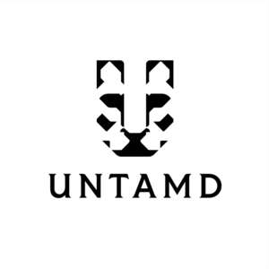

Trade Mark Journal No.2025/050 12 December 2025
UK00004300681 25 November 2025 (8,14,36,37,40,42)
Mark 1
Mark 2

- Class 8
- Sterling silver table spoons; Sterling silver table knives; Sterling silver table forks; Silver plate [knives, forks and spoons]; Piercing apparatus (Ear -); Ear-piercing guns; Ear-piercing needles; Ear piercing apparatus; Ear-piercing apparatus; Electric ear hair trimmers; Ear tag pliers for livestock; Pans for panning for gold; Pearl catchers [hand-operated tools]; Glaziers' diamonds [parts of hand tools]; Diamonds (Glaziers' -) [parts of hand tools]; Diamond cutting tools for hand-operated tools; Glaziers' diamonds being parts of hand tools; Diamond drill bits for hand-operated tools; Watch case openers; Sharpening stones; Spoons; Soup spoons; Disposable spoons; Grapefruit spoons; Coffee spoons; Biodegradable spoons; Souvenir collector spoons; Spoons for tea; Forks and spoons; Spoons being tableware; Knives, forks and spoons; Stainless steel table spoons; Spoons made of precious metal; Tableware [knives, forks and spoons]; Silverware [cutlery, forks and spoons]; Table cutlery [knives, forks and spoons]; Table knives, forks and spoons of plastic; Baby spoons, table forks and table knives; Table knives, forks and spoons for babies; Plastic spoons, table forks and table knives; Knife sharpeners; Knife holders; Knife bags; Knife steels; Knife sheaths; Knife handles; Diving knife holders; Knife sharpeners [hand tools]; Knife sheaths of leather; Knife sharpeners [hand operated tools]; Scoring knife for veneer sheets; Forks; Digging forks [spading forks]; Table forks; Garden forks; Biodegradable forks; Fish forks; Forks [cutlery]; Weeding forks; Snail forks; Fondue forks; Salad forks; Disposable forks; Forks being tableware; Anti-riot forks; Weeding forks [hand tools]; Stainless steel table forks; Agricultural forks [hand tools]; Weeding forks being hand tools; Forks made of precious metal.
- Class 14
- Jewellery; Jewellery, including imitation jewellery and plastic jewellery; Ornaments [jewellery]; Enamelled jewellery; Wristlets [jewellery]; Bracelets [jewellery]; Pearls [jewellery]; Shoe jewellery; Imitation jewellery; Fashion jewellery; Costume jewellery; Facial jewellery; Jade [jewellery]; Necklaces [jewellery]; Precious jewellery; Cloisonné jewellery; Paste jewellery; Artificial jewellery; Charms [jewellery]; Pendants [jewellery]; Jewellery items; Jewellery chains; Chains [jewellery]; Body jewellery; Pewter jewellery; Lockets [jewellery]; Jewellery findings; Crosses [jewellery]; Rings [jewellery]; Jewellery (Paste -); Amulets [jewellery]; Brooches [jewellery]; Jewellery brooches; Jewellery cases; Jewellery caskets; Jewellery articles; Jewellery stones; Personal jewellery; Cloisonne jewellery; Gold jewellery; Hat jewellery; Ivory jewellery; Fake jewellery; Trinkets [jewellery]; Jewellery charms; Pins [jewellery]; Jewellery boxes; Jewellery products; Jewellery chain; Jewellery rolls; Lapel pins [jewellery]; Jewellery incorporating pearls; Agate as jewellery; Amulets being jewellery; Articles of jewellery; Decorative brooches [jewellery]; Jewellery incorporating diamonds; Jewellery cases [fitted]; Wooden jewellery boxes; Rings being jewellery; Charms for jewellery; Items of jewellery; Plastic costume jewellery; Crucifixes as jewellery; Jewellery hat pins; Jewellery foot chains; Decorative pins [jewellery]; Imitation jewellery ornaments; Jewellery boxes [fitted]; Ring bands [jewellery]; Clasps for jewellery; Jewellery cases [caskets]; Body costume jewellery; Synthetic stones [jewellery]; Gold thread [jewellery]; Jewellery containing gold; Sterling silver jewellery; Pins being jewellery; Silver thread [jewellery]; Ornaments [jewellery, jewelry (Am.)]; Jewellery of precious metals; Beads for making jewellery; Clips of silver [jewellery]; Lockets [jewellery, jewelry (Am.)]; Articles of imitation jewellery; Amberoid pendants being jewellery; Jewellery fashioned from bronze; Cloisonné jewellery [jewelry (Am.)]; Jewellery made from gold; Ivory [jewellery, jewelry (Am.)]; Jewellery incorporating precious stones; Brooches [jewellery, jewelry (Am.)]; Amber pendants being jewellery; Gold plated brooches [jewellery]; Jewellery of yellow amber; Bracelets [jewellery, jewelry (Am.)]; Amulets [jewellery, jewelry (Am.)]; trinkets [jewellery, jewelry (Am.)]; Chains [jewellery, jewelry (Am.)]; Jewellery for personal wear; Jewellery made from silver; Jewellery in precious metals; Necklaces [jewellery, jewelry (Am.)]; Jewellery made of bronze; Jewellery for personal adornment; Jewellery made of plastics; Medallions [jewellery, jewelry (Am.)]; Jewellery made of crystal; Pearls [jewellery, jewelry (Am.)]; Jewellery made of glass; Rings [jewellery, jewelry (Am.)]; Charms [jewellery, jewelry (Am.)]; Pins [jewellery, jewelry (Am.)]; Cabochons for making jewellery; Presentation boxes for jewellery; Jewellery fashioned of precious metals; Wire of precious metal [jewellery]; Paste jewellery [costume jewelry (Am.)]; Jewellery boxes of precious metals; Parts and fittings for jewellery; Jewellery in non-precious metals; Jewellery made of precious metals; Jewellery rope chain for anklets; Threads of precious metal [jewellery]; Jewellery rope chain for bracelets; collets being parts of jewellery; Jewellery fashioned of cultured pearls; Jewellery caskets of precious metal; Friendship rings; Platinum rings; Key rings; Gold rings; Wedding rings; Rings [trinket]; Finger rings; Rings [jewelry]; Signet rings; Silver rings; Eternity rings; Engagement rings; Gold plated rings; Decorative key rings; Gold-plated rings; Silver-plated rings; Retractable key rings; Body-piercing rings; Leather key rings; Charms for key rings; Key rings of leather; LED finger ring watches; Key rings [split rings with trinket or decorative fob]; Non-metal key rings; Imitation leather key rings; Rings of precious metal; Key rings [trinkets or fobs]; Rings coated with precious metals; Key rings, not of metal; Ring holders of precious metal; Key rings of precious metal; Gold; Gold alloys; Gold ingots; Gold coins; Gold chains; Gold earrings; Gold necklaces; Gold medals; Gold bullion; Imitation gold; Gold bracelets; Gold base alloys; Gold plated chains; Gold-plated earrings; Gold plated bracelets; Gold-plated necklaces; Gold bullion coins; Gold thread jewelry; Gold plated earrings; Gold alloy ingots; Gold thread [jewelry]; Square gold chain; Figurines made from gold; Gold and its alloys; Watches made of gold; Gold, unwrought or beaten; Watches made of plated gold; Cuff links made of gold; Figurines made of imitation gold; Horological instruments made of gold; Watches made of rolled gold; Gold, unworked or semi-worked; Objet d'art of enamelled gold; Gold thread [jewellery, jewelry (Am.)]; Cuff links made of imitation gold; Spun silver [silver wire]; Silver; Silver ingots; Silver watches; Unwrought silver; Silver alloys; Silver-plated earrings; Silver bullion; Silver necklaces; Silver earrings; Silver thread; Silver-plated necklaces; Silver bracelets; Silver alloy ingots; Silver objets d'art; Unwrought silver alloys; Silver-plated bracelets; Silver thread [jewelry]; Figurines made from silver; Cuff links made of silver plate; Silver and its alloys; Silver, unwrought or beaten; Silver thread [jewellery, jewelry (Am.)]; Objet d'art of enamelled silver; Necklaces; Necklaces [jewelry]; Choker necklaces; Bib necklaces; Necklace charms; Closures for necklaces; Necklaces of precious metal; Jewellery rope chain for necklaces; Jewellery chain of precious metal for necklaces; Bracelets; Watch bracelets; Charity bracelets; Friendship bracelets; Bead bracelets; Bracelet charms; Bangle bracelets; Bracelets [charity]; Ankle bracelets; Bracelets [jewelry]; Identification bracelets [jewelry]; Bracelets for watches; Wooden bead bracelets; Bracelets and watches combined; Metal expanding watch bracelets; Bracelets of precious metal; Identification bracelets of precious metal [jewelry]; Bracelets made of embroidered textile [jewelry]; Bracelets made of embroidered textile [jewellery]; Plastic bracelets in the nature of jewelry; Jewellery chain of precious metal for bracelets; Flexible wire bands for wear as a bracelet; Bracelets made of rubber or silicone with pattern or message; Brooches [jewelry]; Jewelry brooches; Brooches being jewelry; Ear ornaments in the nature of jewellery; Earrings; Ear clips; Clip earrings; Ear studs; Pierced earrings; Hoop earrings; Drop earrings; Earrings of precious metal; Jewelry clips for adapting pierced earrings to clip-on earrings; Bangles; Pearl; Pearls; Imitation pearls; Natural pearls; Cultured pearls; Pearls [jewelry]; Man-made pearls; Pearls made of ambroid [pressed amber]; Gemstones, pearls and precious metals, and imitations thereof; Platinum; Platinum watches; Platinum alloys; Platinum [metal]; Platinum ingots; Platinum jewelry; Platinum alloy ingots; Platinum and its alloys; Diamonds; Diamond jewelry; Diamond [unwrought]; Cut diamonds; Imitation precious stones; Semi-precious stones; Unwrought precious stones; Figurines of precious stones; Jewellery made of precious stones; Precious and semi-precious stones; Objet d'art made of precious stones; Articles of jewellery with precious stones; Natural gem stones; Artificial gem stones; Gems; Olivine [gems]; Jewellery being articles of precious stones; Articles of jewellery with ornamental stones; Jewellery fashioned of semi-precious stones; Chalcedony used as gems; Precious and semi precious gems; Precious stones; Semi-finished articles of precious stones for use in the manufacture of jewellery; Spinel [precious stones]; Synthetic precious stones; Ruby; Emerald; Emeralds; Sapphires; Sapphire; Tanzanite being gemstones; Opals; Opal; Topaz; Chains [jewelry]; Chains (Watch -); Jewelry chains; Neck chains; Watch chains; Jewel chains; Key chains; Jewelry guard chains; Retractable key chains; Chains for watches; Key chain tags; Metal key chains; Pendants for watch chains; Chains of precious metals; Charms for key chains; Imitation leather key chains; Key chains [trinkets or fobs]; Tie chains of precious metal; Key chains of precious metal; Rope chain made of precious metal; Chain mesh of precious metals [jewellery]; Key chains for use as jewelry; Chain mesh of semi-precious metals; Key chains for use as jewellery; Chains made of precious metals [jewellery]; Jewellery chain of precious metal for anklets; Key chains as jewellery [trinkets or fobs]; Articles of jewellery made from rope chain; Rope chain [jewellery] made of common metal; Watches; Watch clasps; Alarm watches; Watch movements; Pendant watches; Watch bands; Watch straps; Springs (Watch - ); Electronic watches; Women's watches; Watch dials; Watch cases [parts of watches]; Watch pouches; Watch crowns; Divers' watches; Sports watches; Watch crystals; Mechanical watches; Watch parts; Watch cases; Watch springs; Electric watches; Watch boxes; Watch fobs; Dress watches; Wrist watches; Wristlet watches; Watch hands; Pocket watches; Stop watches; Diving watches; Watch glasses; Quartz watches; Watch casings; Chronographs [watches]; Watch faces; Table watches; Automatic watches; Watch winders; Solar watches; Parts for watches; Cases for watches; Bands for watches; Mechanical watch oscillators; Watches and clocks; Wrist watch bands; Chronographs as watches; Faces for watches; Watches for nurses; Watches bearing insignia; Watch boxes [presentation]; Fittings for watches; Clocks and watches; Metal watch bands; Straps for watches; Leather watch straps; Dials for watches; Oscillators for watches; Watch straps of nylon; Watch straps of plastic; Clocks and watches, electric; Presentation boxes for watches; Cases for watches [presentation]; Watches for outdoor use; Cases [fitted] for watches; Watches for sporting use; Straps for wrist watches; Watch and clock springs; Non-leather watch straps; Clock and watch hands; Watch and clock hands; Wrist straps for watches; Watch straps of polyvinyl chloride; Watch straps of synthetic material; Cases adapted for holding watches; Movements for clocks and watches; Electrically operated movements for watches; Barrels [clock and watch making]; Parts and fittings for watches; Watches containing a game function; Mechanical watches with automatic winding; Pendulums [clock and watch making]; Anchors [clock and watch making]; Movements for watches and clocks; Watches with wireless communication function; Electronically operated movements for watches; Housings for clocks and watches; Mechanical watches with manual winding; Watches incorporating a telecommunication function; Chronographs for use as watches; Cases for watches and clocks; Digital watches with automatic timers; Watches incorporating a memory function; Cases adapted to contain watches; Watches made of precious metals; Jewellery boxes and watch boxes; Dials [clock and watch making]; Clocks and watches for pigeon-fanciers; Hands (Clock -) [clock and watch making]; Watches with the function of wireless communication; Cases of precious metals for watches; Dials for clock and watch making; Clock hands [clock and watch making]; Watches containing an electronic game function; Cases for clock and watch-making; Dials for clock and watch-making; Dials for clock-and-watch-making; Watch straps made of metal or leather or plastic; Watches made of precious metals or coated therewith; Wedding bands; Wrist bands [charity]; Fitted covers for jewelry rings to protect against impact, abrasion, and damage to the ring’s band and stones; Jewellery made of crystal coated with precious metals; Prize cups of precious metals; Prize cups made of precious metal; Jewellery boxes of precious metal; Jewellery in semi-precious metals; Jewellery cases of precious metal; Charms [jewellery] of common metals; Jewellery coated with precious metals; Jewellery plated with precious metals; Lapel pins of precious metals [jewellery]; Jewellery made of non-precious metal; Rings [jewellery] made of precious metal; Jewellery fashioned from non-precious metals; Jewellery being articles of precious metals; Jewellery cases [caskets] of precious metal; Jewellery coated with precious metal alloys; Small jewellery boxes of precious metals; Jewellery made of plated precious metals; Wire of precious metal [jewellery, jewelry (Am.)]; Rings [jewellery] made of non-precious metal; Articles of jewellery coated with precious metals; Articles of jewellery made of precious metals; Crucifixes of precious metal, other than jewellery; Threads of precious metal [jewellery, jewelry (Am.)]; Articles of jewellery made of precious metal alloys; Trinkets of bronze. .
- Class 36
- Jewellery appraisal; Jewellery appraisal [valuation]; Appraisal (Jewellery [jewelry Am.] -; Valuations [appraisals] of jewellery; Jewellery [jewelry (Am.)] appraisal; Appraisals [valuation] of jewellery; Valuation of diamonds; Valuation of diamonds, precious stones and precious metals.
- Class 37
- Jewellery remounting; Polishing of jewellery; Remounting of jewellery; Refinishing silver; Installation of automobile accessories; Assembly [installation] of accessories for vehicles; Cleaning of stone work; Mining for precious stones; Setting of gems [repair]; Watch repair; Repair of watches; Watch repair (Clock and -); Watch repair or maintenance; Watch mending (Clock and -); Clock and watch repair; Clock and watch mending; Clock and watch repair services; Maintenance and repair of watches; Clock and watch repair or maintenance; Providing information relating to the repair or maintenance of clocks and watches.
- Class 40
- Gold plating; Gold-plating; Gold-leafing; Silver plating; Plating; Tin plating; Tinplating; Metal plating; Nickel plating; Cadmium plating; Plating (Metal -); Processing and cutting of diamonds and other precious stones; Cutting of diamonds; Polishing of diamonds; Polishing of diamonds and other precious stones; Cutting of precious stones; Polishing of gems; Stone carving; Stone crushing; Stone grinding; Electroplating; Surface plating; Chromium plating; Zinc plating.
- Class 42
- Designing of jewellery; Design of jewellery; Jewellery design services; Designing; Packaging designs; Furniture design; Design planning; Designing (Dress -); Hat design; Jewelry design; Design of fashion accessories; Design of clothing accessories; Designing of watches; Design sketching of packaging, containers, dinnerware and table utensils; Authenticating diamonds; Certification of diamonds; Authentication of diamonds; Diamond authentication and certification services. .
UNTAMD Limited